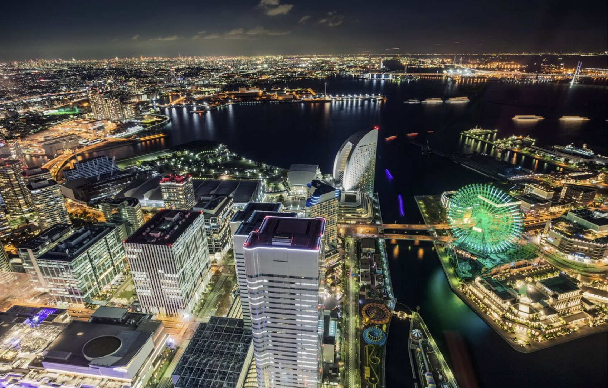

요코하마 랜드마크 타워 전경

스카이가든 전망대에서 본 미나토미라이 야경

랜드마크 타워 내부와 주변 쇼핑몰
위치 / 접근
요코하마 미나토미라이 21 지구 중심, 가나가와현 요코하마시 니시구 미나토미라이 2-2-1. 미나토미라이역에서 도보 약 3분.
운영 / 요금 / 시즌
- 전망대 '스카이 가든' 운영시간: 10:00~21:00 (토요일 등 일부일은 22:00까지)
- 입장료: 성인 약 1,000엔 (할인 예매 시 약 900엔대)
- 맑은 날엔 후지산까지 조망 가능, 일몰~야경 시간대 인기
- 연말·축제 시즌에는 조명과 이벤트로 더욱 화려한 분위기
체험 / 명소
69층 '스카이 가든' 전망대에서 360도 파노라마로 요코하마 전경을 감상할 수 있다. 엘리베이터는 약 40초 만에 69층까지 도달하며, 초고층 특유의 스릴을 느낄 수 있다. 같은 건물 내에는 쇼핑몰, 레스토랑, 호텔이 함께 있어 '전망 + 쇼핑 + 식사 + 숙박'이 한 번에 가능하다. 낮에는 항구와 도시 풍경, 밤에는 미나토미라이의 불빛이 어우러진 최고의 야경을 즐길 수 있다.
먹거리 / 주변
1층~5층 쇼핑몰 '랜드마크 플라자'에는 카페, 레스토랑, 기념품점이 다양하다. 커플 여행자라면 전망대 관람 후 70층 호텔 '요코하마 로열 파크 호텔'에서 식사 또는 숙박을 즐겨볼 수 있다. 주변의 '퀸즈스퀘어'와 '마린앤워크'에서는 해산물 요리와 야외 테라스 카페도 인기다.
여행 팁
- 일몰~야경 시간대는 매우 붐비므로 사전 예매 추천
- 비 오는 날은 시야가 줄지만, 도시 불빛이 반사되어 오히려 특별한 분위기
- 전망대 유리 반사 줄이려면 삼각대·플래시 사용 금지
- 전망대와 쇼핑몰 이동 동선이 길어 시간 여유를 두는 것이 좋다